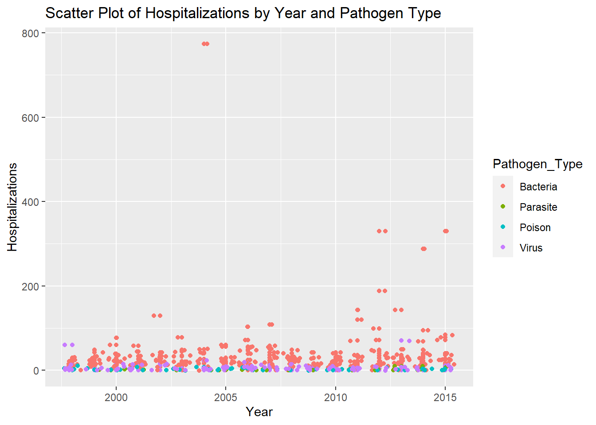
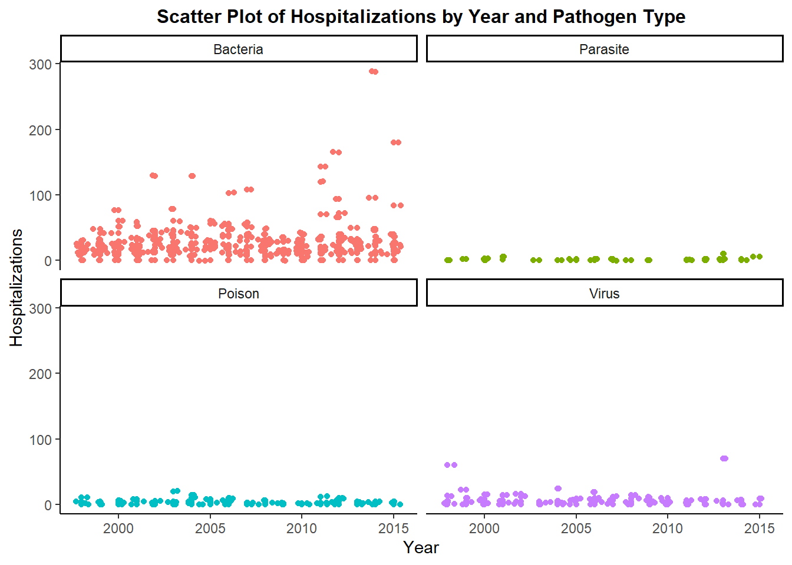
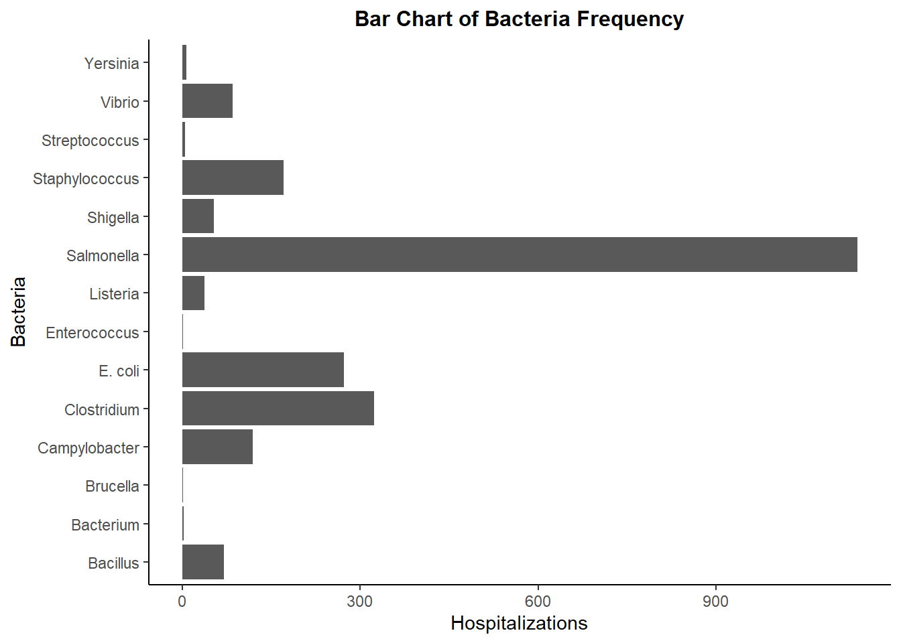
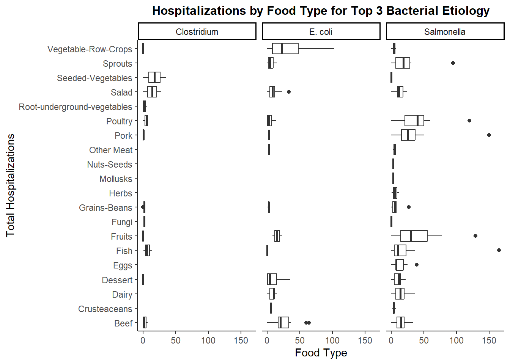
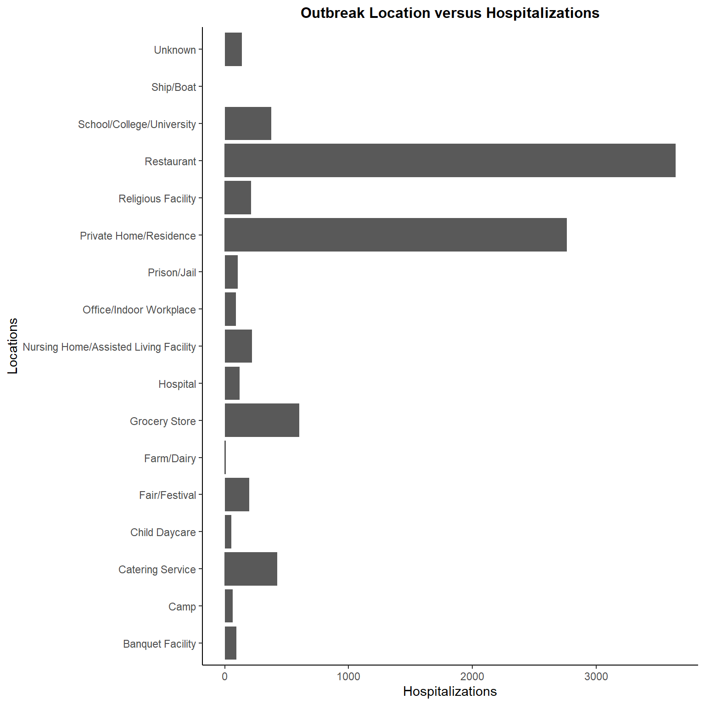
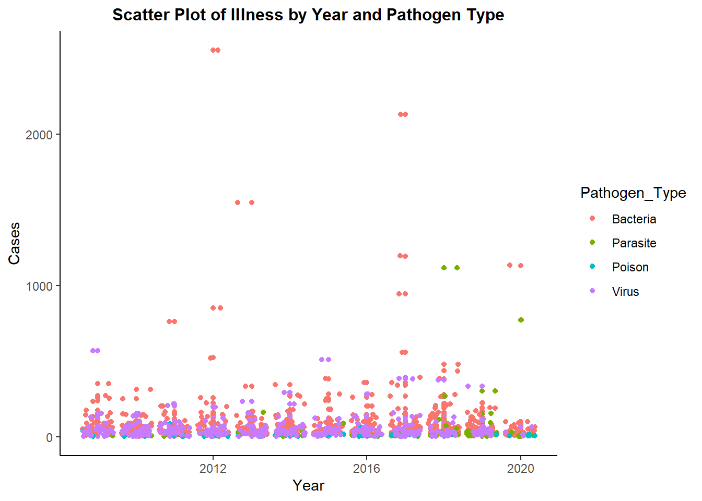
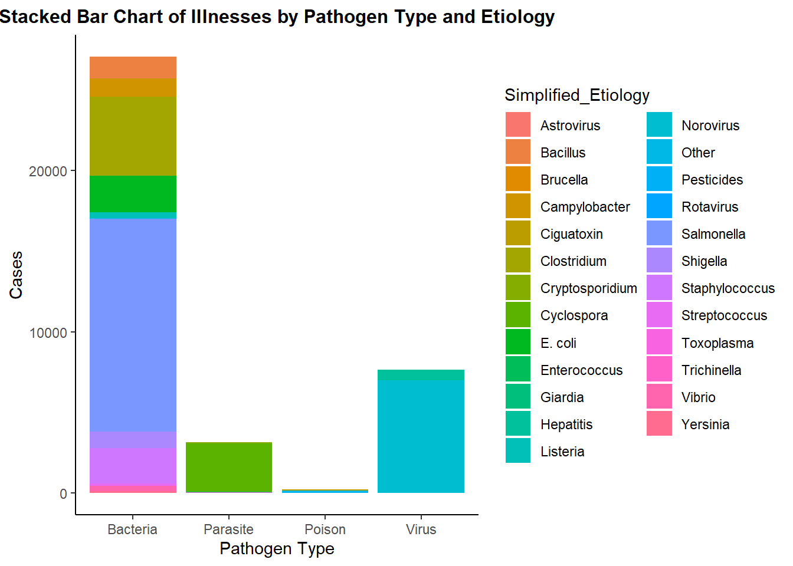
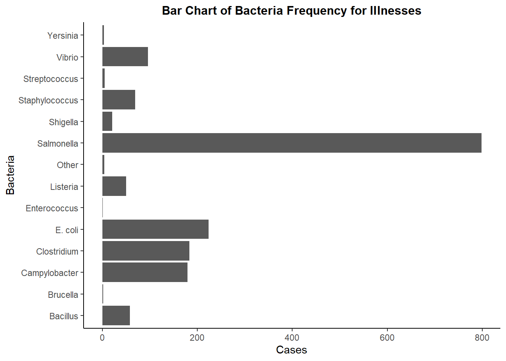
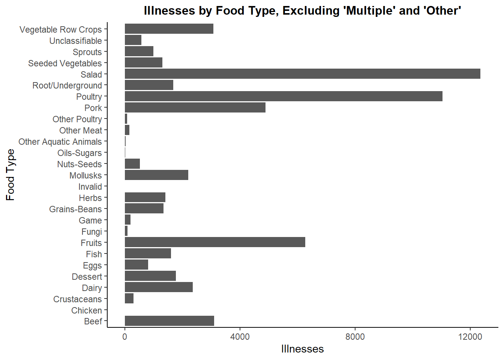
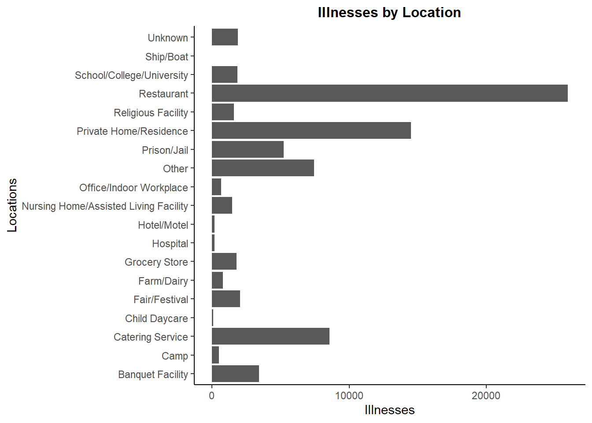

here() starts at C:/Users/weifa/OneDrive/Documents/GitKraken/MADA/data analysis/Weifan-Kailin-MADA-project
Load Data
Training Data
# Path to Datadata_location <-here("data","processed_data","processed_training_data.rds")# Import Datatraining_data_final <-readRDS(data_location)
Testing/Analysis Data
# Path to Datadata_location <-here("data","processed_data","processed_testing_data.rds")# Import Dataanalysis_data_final <-readRDS(data_location)
Data Exploration
Training Data
The outcome of interest we will explore for the training data is hospitalizations.
Pathogen Type + Etiology vs Hospitalization
# Pathogen Type + Etiology vs Hospitalizationggplot(training_data_final %>%group_by(Pathogen_Type, Simplified_Etiology, Hospitalizations) %>%count() %>%mutate(true_hospitalization = n * Hospitalizations), aes(x = Pathogen_Type, y = true_hospitalization, group = Simplified_Etiology, fill = Simplified_Etiology)) +geom_col() +labs(x ="Pathogen Type", y ="Hospitalizations", title ="Stacked Bar Chart of Hospitalizations by Pathogen & Etiology") +theme_classic() +theme(plot.title =element_text(face ="bold", size =11, hjust =0.5))

## Save Graphimage_path <-here("results","images_EDA")ggsave("pathogen_type_etiology_v_hospitalizations.png", path = image_path, width =3000, height =2000, units ="px")
# Data Visualization## Illnesses# ggplot(training_data_final %>%# group_by(Year, Pathogen_Type, Illnesses) %>%# count() %>%# mutate(true_illnesses = n * Illnesses),# aes(x = Year, y = true_illnesses,# group = Pathogen_Type, color = Pathogen_Type)) +# geom_point() + geom_jitter() +# labs(x = "Year", y = "Illnesses",# title = "Scatter Plot of Illnesses by Year and Pathogen Type",# color = "Pathogen Type") +# facet_wrap(~ Pathogen_Type) +# theme(legend.position = "none")## Hospitalizationsggplot(training_data_final %>%group_by(Year, Pathogen_Type, Hospitalizations) %>%count() %>%mutate(true_hospitalization = n * Hospitalizations), aes(x = Year, y = true_hospitalization, group = Pathogen_Type, color = Pathogen_Type)) +geom_point() +geom_jitter() +labs(x ="Year", y ="Hospitalizations", title ="Scatter Plot of Hospitalizations by Year and Pathogen Type",color ="Pathogen Type") +facet_wrap(~ Pathogen_Type) +theme(legend.position ="none")

## Save Graphggsave("time_v_hospitalization_pathogen_type.png", path = image_path, width =3000, height =2000, units ="px")
Bacterial Etiologies for Outbreaks
# Generalggplot(training_data_final %>%select(Pathogen_Type, Simplified_Etiology, Hospitalizations) %>%filter(Pathogen_Type =="Bacteria"), aes(x = Simplified_Etiology)) +geom_bar() +labs(x ="Bacteria", y ="Hospitalizations", title ="Bar Chart of Bacteria Frequency") +coord_flip()

ggsave("bacterial_etiology_v_hospitalization_frequency.png", path = image_path, width =3000, height =2000, units ="px")# Top 3 Bacterial Etiology: Salmonella, E. coli, and ClostridiumTop_Hosp <- training_data_final %>%select(Simplified_Etiology, Hospitalizations, `IFSAC Category`) %>%group_by(Simplified_Etiology, Hospitalizations, `IFSAC Category`) %>%filter(Simplified_Etiology %in%c("Salmonella","Clostridium","E. coli")) %>%filter(`IFSAC Category`!="Multiple") %>%filter(`IFSAC Category`!="Other") %>%count() %>%mutate(total_hospitalizations = n * Hospitalizations) %>%arrange(desc(total_hospitalizations))ggplot(Top_Hosp, aes(x=`IFSAC Category`, y = total_hospitalizations))+geom_boxplot() +labs(x ="Total Hospitalizations", y ="Food Type", title ="Hospitalizations by Food Type for Top 3 Bacterial Etiology") +facet_wrap(vars(Simplified_Etiology))+coord_flip()

Hospitalizations by State
# States vs Hospitalizationstate_v_hospitalization_training <- training_data_final %>%group_by(State) %>%mutate(all_hospitalizations =sum(Hospitalizations)) %>%count(all_hospitalizations) %>%select(State, all_hospitalizations) %>%arrange(desc(all_hospitalizations))training_data_final %>%group_by(State) %>%mutate(all_illnesses =sum(Illnesses)) %>%count(all_illnesses) %>%select(State, all_illnesses) %>%arrange(desc(all_illnesses))
# A tibble: 54 × 2
# Groups: State [54]
State all_illnesses
<chr> <dbl>
1 Multistate 18617
2 California 10054
3 Illinois 7824
4 Minnesota 6928
5 Ohio 6384
6 New York 6249
7 Wisconsin 4638
8 Florida 4033
9 Georgia 3903
10 Michigan 3876
# … with 44 more rows
## Save Tabletable_path <-here("results", "state_v_hospitalization_training.rds")saveRDS(state_v_hospitalization_training, file = table_path)rmarkdown::paged_table(state_v_hospitalization_training)
# A tibble: 54 × 2
# Groups: state [54]
state all_hosp
<chr> <dbl>
1 alabama 98
2 alaska 58
3 arizona 111
4 arkansas 81
5 california 533
6 colorado 113
7 connecticut 83
8 delaware 4
9 florida 321
10 georgia 263
# … with 44 more rows
state_map <- training_hosp %>%distinct(state)%>%inner_join(., map_data("state"), by =c("state"="region"))
Warning in inner_join(., map_data("state"), by = c(state = "region")): Each row in `x` is expected to match at most 1 row in `y`.
ℹ Row 1 of `x` matches multiple rows.
ℹ If multiple matches are expected, set `multiple = "all"` to silence this
warning.
Warning in right_join(training_hosp, state_map, by = c(state = "state")): Each row in `x` is expected to match at most 1 row in `y`.
ℹ Row 1 of `x` matches multiple rows.
ℹ If multiple matches are expected, set `multiple = "all"` to silence this
warning.
map_final %>%ggplot(aes(x=long, y=lat, fill = all_hosp, group = group)) +geom_polygon(color="black", size =0.1) +geom_polygon(data = state_map, aes(x= long, y= lat, group = group), fill =NA, color ="black", size=0.3) +scale_fill_gradient(name ="Number of \n Hospitalizations",low ="#FFFFFF", high="#FF0000",limits =c(0,NA)) +labs(title ="Cases of Hospitalizations Caused by Foodborne Illnesses in Each State (1998-2015)") +theme_void() +theme(plot.title =element_text(hjust =0.5)) +theme(plot.title =element_text(face ="bold", size =12)) +coord_quickmap()
Warning: Using `size` aesthetic for lines was deprecated in ggplot2 3.4.0.
ℹ Please use `linewidth` instead.
Location_v_Hospitalization <-ggplot(training_data_final, aes(x = Location, y = Hospitalizations)) +geom_col() +labs(x ="Locations", y ="Hospitalizations", title ="Outbreak Location versus Hospitalizations") +coord_flip()Location_v_Hospitalization

ggsave("Location_v_hospitalization.png", path = image_path, width =3000, height =2000, units ="px")
All outbreaks with a high hospitalization count (> 200 cases) are caused by bacteria. It also appears that most outbreaks caused by bacteria are due to Salmonella. California and Minnesota are the two states with the highest total hospitalization count due to foodborne illness from 1998 to 2015. Restaurants and Private home are the most frequent locations with the highest total hospitalization count.
Testing Data
Pathogen Type vs Illnesses Over Time
ggplot(analysis_data_final %>%group_by(Year, Pathogen_Type, Illnesses) %>%count() %>%mutate(true_illness_count = n * Illnesses), aes(x = Year, y = true_illness_count, group = Pathogen_Type, color = Pathogen_Type)) +geom_point() +geom_jitter() +labs(x ="Year", y ="Cases", title ="Scatter Plot of Illness by Year and Pathogen Type")

ggsave("time_v_illness_pathogen_type.png", path = image_path, width =3000, height =2000, units ="px")
Pathogen Type and Etiology vs Illnesses
# Visualizationggplot(analysis_data_final %>%group_by(Pathogen_Type, Simplified_Etiology, Illnesses) %>%count() %>%mutate(true_illness_count = n * Illnesses), aes(x = Pathogen_Type, y = Illnesses, group = Simplified_Etiology, fill = Simplified_Etiology)) +geom_col() +labs(x ="Pathogen Type", y ="Cases", title ="Stacked Bar Chart of Illnesses by Pathogen Type and Etiology")

# Save Graphggsave("pathogen_type_etiology_v_illness.png", path = image_path, width =3000, height =2000, units ="px")
Bacterial Etiologies
ggplot(analysis_data_final %>%group_by(Pathogen_Type, Simplified_Etiology, Illnesses) %>%filter(Pathogen_Type =="Bacteria"), aes(x = Simplified_Etiology)) +geom_bar() +labs(x ="Bacteria", y ="Cases", title ="Bar Chart of Bacteria Frequency for Illnesses")+coord_flip()

# Save Graphggsave("bacterial_etiology_v_outbreak_frequency.png", path = image_path, width =3000, height =2000, units ="px")
ggplot(analysis_data_final %>%filter(`IFSAC Category`!="Multiple") %>%filter(`IFSAC Category`!="Other"), aes(x =`IFSAC Category`, y = Illnesses)) +geom_col() +labs(x ="Food Type", y ="Illnesses", title ="Illnesses by Food Type, Excluding 'Multiple' and 'Other'")+coord_flip()

ggsave("food_type_v_illness_frequency.png", path = image_path, width =3000, height =2000, units ="px")
Locations and Illnesses
# Locations and Illnessesggplot(analysis_data_final %>%group_by(Location) %>%mutate(all_illnesses =sum(Illnesses)) %>%count(all_illnesses) %>%arrange(desc(all_illnesses)), aes(x = Location, y = all_illnesses)) +geom_col() +labs(x ="Locations", y ="Illnesses", title ="Illnesses by Location")+coord_flip()

# Save Graphggsave("Location_v_Illness.png", path = image_path, width =3000, height =2000, units ="px")
The outbreaks with a high number of cases (> 500) are caused by bacteria. The stacked barplot indicates that the top two etiologic agents that contribute to fooborne-illnesses are Salmonella and Norovirus, which belong to the pathogen type of Bacteria and Virus respectively. In bacterial pathogen, Salmonella genus is the most dominant factor that is associated with foodborne outbreaks, followed by E. coli species and Vibrio genus. Geographically speaking, Arkansas and Minnesota are the two states with the highest accumulated foodborne illnesses from 1998 to 2015. Salad, Poultry, and Fruits are the three most common types of food vectors that are involved in transmitting foodborne pathogens. Resturants and Private home are the most frequent locations that foodborne outbreaks occur.
Overall, the relationships between predictors and outcomes of training dataset share similar patterns with those of analysis dataset.